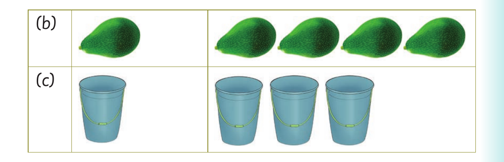

Singular and plural forms - song

Row B. A picture of one avocado; A picture of four avocados. Row C. A picture of one bucket; A picture of three buckets.
Activity 2
1. Sing or sign the following song:
Plural means more than one
Here is the way to get it done
To make it plural, add an -s
To make it plural, add an -s
Cat, cats
Dog, dogs
Plural means more than one
Here is another way it is done
To make it plural, add an -es
To make it plural, add an -es
Fox, foxes
Box, boxes
Plural means more than one
Here is another way it is done
To make it plural, add an -ies
To make it plural, add an -ies
Berry, berries
Puppy, puppies
Now I know how it is done.
Source: Adapted from https://www.youtube.com/watch?v=7oPWiXt4CmQ